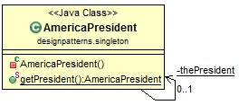

单例模式是Java中最常用的模式之一。它用于控制通过阻止外部实例化和修改而创建的对象数。这个概念可以推广到只有一个对象存在时更有效地运行的系统，或者将实例化限制为一定数量的对象，例如：
这是一个简单的用例。一个国家只能有一位总统。因此，无论何时需要总统，都应该归还唯一的总统，而不是创建新总统。该getPresident()方法将确保始终只创建一个总统。
类图和代码

立即模式：
public class AmericaPresident {
private static final AmericaPresident thePresident = new AmericaPresident();
private AmericaPresident() {}
public static AmericaPresident getPresident() {
return thePresident;
}
}thePresident声明为final，因此它将始终包含相同的对象引用。
懒惰模式：
public class AmericaPresident {
private static AmericaPresident thePresident;
private AmericaPresident() {}
public static AmericaPresident getPresident() {
if (thePresident == null) {
thePresident = new AmericaPresident();
}
return thePresident;
}
}正是金九银十跳槽季，为大家收集了2019年最新的面试资料，有文档、有攻略、有视频。有需要的同学可以在公众号【Java知己】，发送【面试】领取最新面试资料攻略！
java.lang.Runtime#getRuntime()是 Java 标准库中经常使用的方法。getRunTime()返回与当前 Java 应用程序关联的运行时对象。
class Runtime {
private static Runtime currentRuntime = new Runtime();
public static Runtime getRuntime() {
return currentRuntime;
}
private Runtime() {}
//...
}这是一个简单的使用示例getRunTime()。它读取 Windows 系统上的网页。
Process p = Runtime.getRuntime().exec("C:/windows/system32/ping.exe programcreek.com");
//get process input stream and put it to buffered reader
BufferedReader input = new BufferedReader(new InputStreamReader(p.getInputStream()));
String line;
while ((line = input.readLine()) != null) {
System.out.println(line);
}
input.close()输出：
Pinging baidu.com [198.71.49.96] with 32 bytes of data:
Reply from 198.71.49.96: bytes=32 time=53ms TTL=47
Reply from 198.71.49.96: bytes=32 time=53ms TTL=47
Reply from 198.71.49.96: bytes=32 time=52ms TTL=47
Reply from 198.71.49.96: bytes=32 time=53ms TTL=47
Ping statistics for 198.71.49.96:
Packets: Sent = 4, Received = 4, Lost = 0 (0% loss),
Approximate round trip times in milli-seconds:
Minimum = 52ms, Maximum = 53ms, Average = 52msSingleton 模式的另一个实现
由于私有构造函数不能防止通过反射来实例化，Joshua Bloch（Effective Java）提出了更好的 Singleton 实现。如果你不熟悉 Enum，这里是Oracle关于 枚举 的一个很好的例子。
public enum AmericaPresident{
INSTANCE;
public static void doSomething(){
//do something
}
}“不积跬步，无以至千里”，希望未来的你能：有梦为马 随处可栖！加油，少年！
正是金九银十跳槽季，为大家收集了2019年最新的面试资料，有文档、有攻略、有视频。有需要的同学可以在公众号【Java知己】，发送【面试】领取最新面试资料攻略！